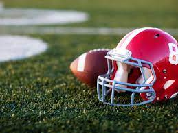
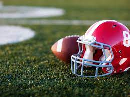

Hello, My name is Dante Davis and I currently am a Senior at Youngstown State University (YSU) pursuing a bachelors in Computer Science. I am planning to graduate in December of 2022 and ready to pursue a career in technology! This website is designed to showcase some information about me and my building knowledge with programming languages. I am very excitied to have the opportunities to further propel my career in technology and to gain more knowledge in my field of expertise!
| Network Administrator / Help Desk | Month / Year | August 2019 - November 2021 |
|---|---|---|
|
| Front Desk/Customer Service | Month / Year | June 2016 - Present |
|---|---|---|
|
 
